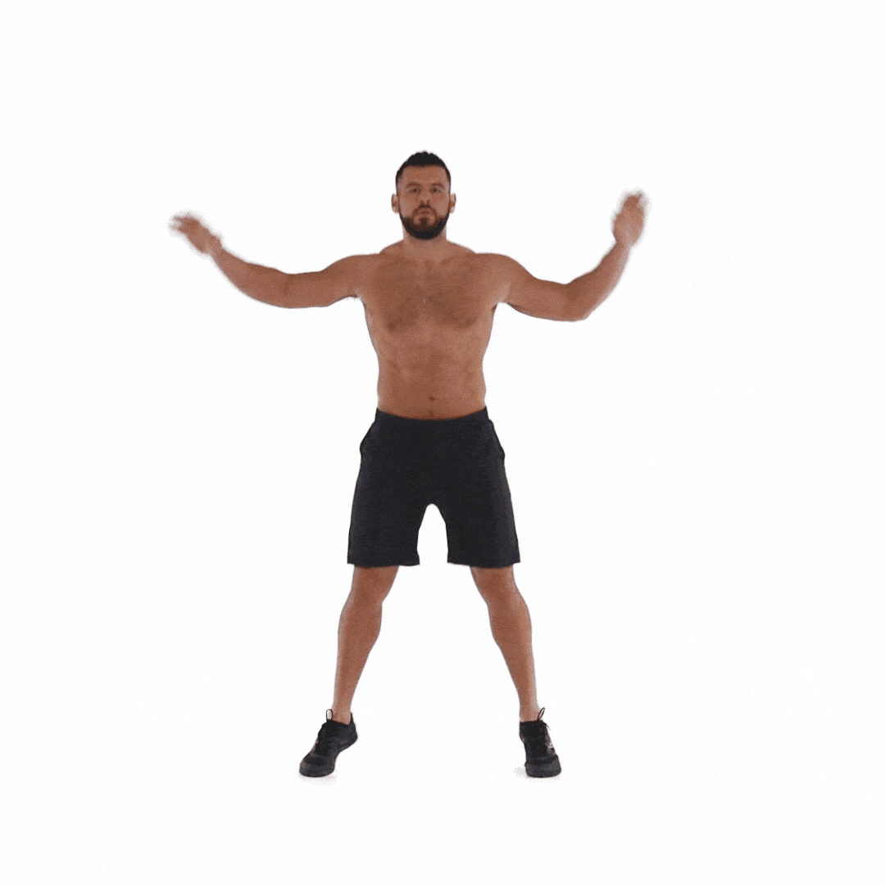
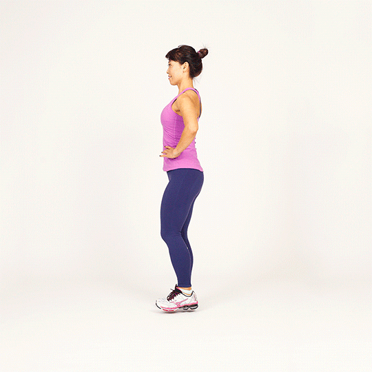
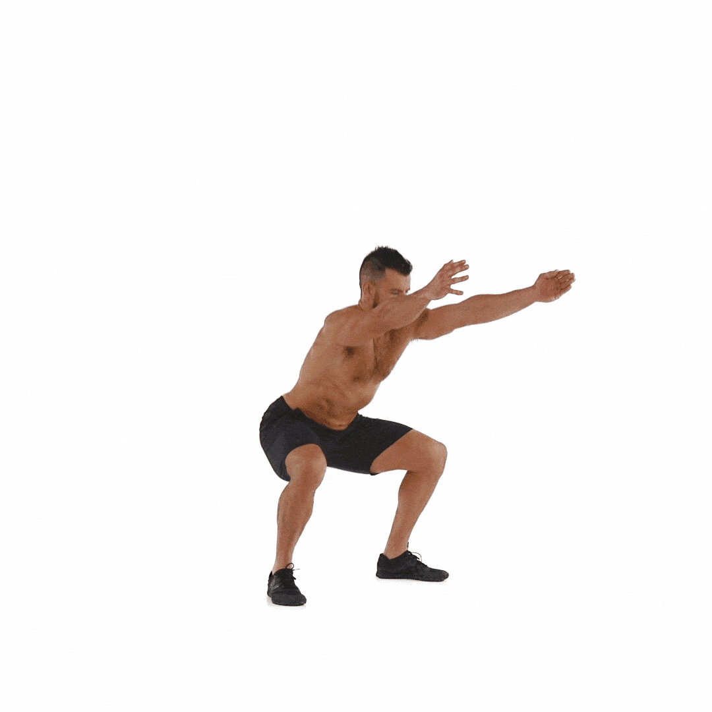

WARM UPS
Jumping Jacks (2 minutes)

- Start with your feet together and arms at your sides.
- - Jump while spreading your legs and raising your arms overhead.
- - Return to the starting position by jumping again.
- This exercise raises your heart rate and warms up your entire body.
Arm Circles (1 minute)

- Extend your arms out to the sides
.
- - Make small circles with your arms, gradually increasing the circle size.
- - After 30 seconds, reverse the direction of the circles.
-- This warms up your shoulder joints and upper body.
Leg Swings (1 minute each leg)

- Hold onto a stable surface for balance.
- - Swing one leg forward and backward in a controlled manner
.
- - After 30 seconds, switch to the other leg.
- This stretches and warms up your hip and leg muscles.
Bodyweight Squats (1 minute):

- Stand with your feet shoulder-width apart
- - Lower your body by bending your knees, as if you're sitting in a chair.
- - Keep your back straight and chest up.
- - Rise back up to the starting position.
- - This prepares your legs and lower back for squats or leg exercises.